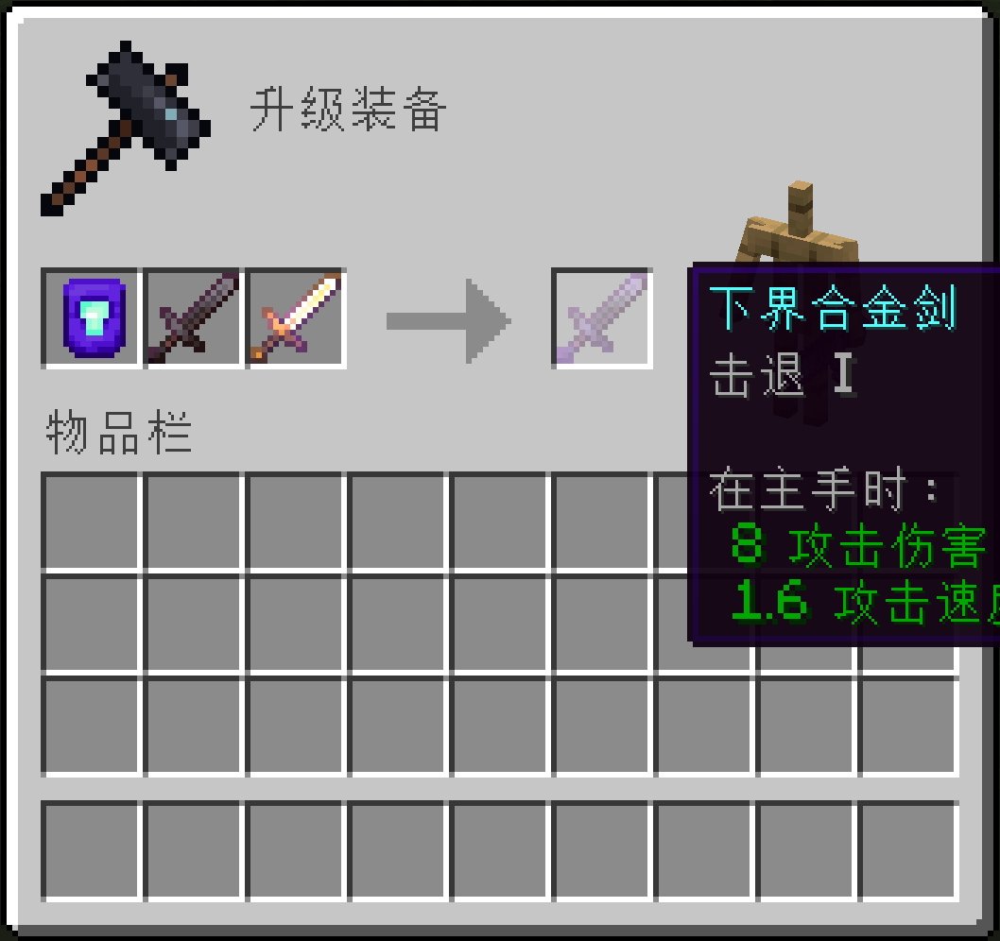
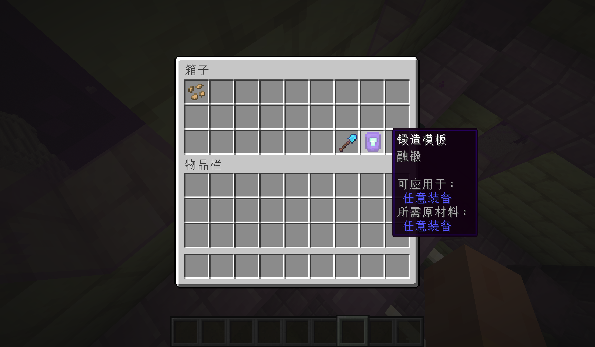
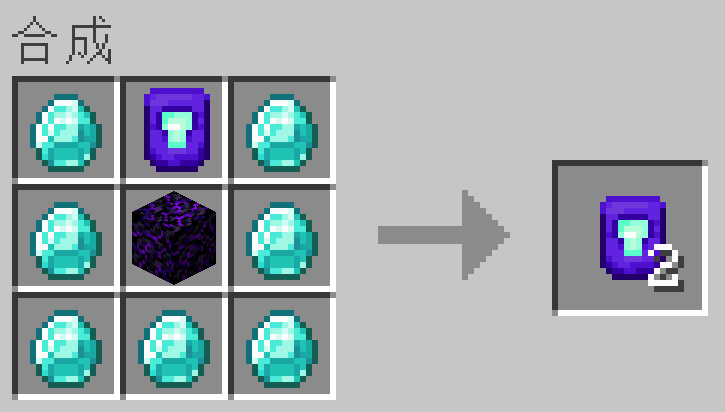

融锻
🪄介绍
这个模组添加了一种新的锻造模板——融锻模板，允许你将一件物品的NBT数据（包括附魔）转移到另一件物品上。

战利品表
你可以在末地城的宝箱里获得融锻模板。

合成配方

🪚配方
新的配方类型
本模组添加了一种配方类型（fusion-smithing:smithing_fusion）。配方JSON文件如下：
{
"type": "fusion-smithing:smithing_fusion",
"template": {
"item": "fusion-smithing:fusion_smithing_template"
},
"base": {
"tag": "c:boots"
},
"addition": {
"tag": "c:boots"
}
}
template字段即配方所用的锻造模板（放在模板槽位，但可以是任何物品， 不一定要是模板）；
base字段即NBT数据转移的源物品；
addition字段即NBT数据转移的目标物品。
默认配方
本模组添加了一些默认配方， 形式正如上面的示例配方，包含的Tag有：
（需要安装AutoTag）
| Tag | 代表物品 |
|---|---|
c:helmets |
头盔 |
c:chestplates |
胸甲 |
c:leggings |
护腿 |
c:boots |
靴子 |
c:bows |
弓 |
c:crossbows |
弩 |
c:shields |
盾牌 |
c:tridents |
三叉戟 |
（只需要原版或Fabric）
| Tag | 代表物品 |
|---|---|
minecraft:swords |
剑 |
minecraft:axes |
斧 |
minecraft:pickaxes |
镐 |
minecraft:shovels |
铲 |
minecraft:hoes |
锄 |
c:shears |
剪刀 |
⚙️配置
初始配置文件：
{
"injected_loot_table": "minecraft:chests/end_city_treasure"
}
如果你不想让融锻模板出现在末地城的宝箱里，只需要将injected_loot_table条目修改为其他的战利品表，或者只是留空。
如何适配更多的物品？
只需制作一个用于添加配方的数据包即可。
✉️反馈
如果有任何Bug或建议，请反馈到Github的Issue页面。